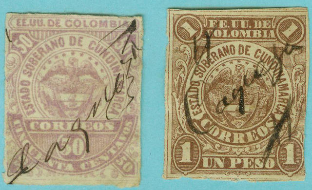
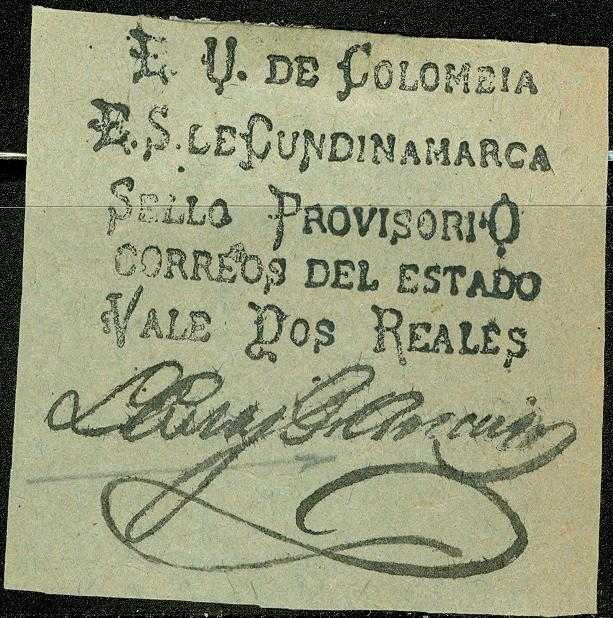

{kind=link}

Return To Catalogue - Colombia overview
Note: on my website many of the
pictures can not be seen! They are of course present in the
catalogue;
contact me if you want to purchase it.
5 c blue 10 c red (eagle in circle) 10 c red (arms with eagle on top, 1877) 20 c green (1877) 50 c violet (1877) 1 P brown (1877)
Value of the stamps |
|||
vc = very common c = common * = not so common ** = uncommon |
*** = very uncommon R = rare RR = very rare RRR = extremely rare |
||
| Value | Unused | Used | Remarks |
| 5 c | *** | *** | |
| 10 c | RR | RR | Eagle |
| 10 c | *** | *** | Arms |
| 20 c | R | R | |
| 50 c | RR | RR | |
| 1 P | RR | RR | |

Forgery? The bottom part of the '5' is much smaller


10 c black on yellow 50 c black on red 1 P black on brown
Value of the stamps |
|||
vc = very common c = common * = not so common ** = uncommon |
*** = very uncommon R = rare RR = very rare RRR = extremely rare |
||
| Value | Unused | Used | Remarks |
| 10 c | RR | RR | 4 Types |
| 50 c | RR | RR | 2 Types |
| 1 P | RR | RR | 2 Types |

Forgery with "fac-simile" overprint.
A few other, extremely rare provisional issues also exist. Forgeries of all above stamps exist.

2 Reales with Friedl certificate.

A forgery of this stamp.
Another certified genuine provisional.

Black on red
Value of the stamps |
|||
vc = very common c = common * = not so common ** = uncommon |
*** = very uncommon R = rare RR = very rare RRR = extremely rare |
||
| Value | Unused | Used | Remarks |
| (-) | RR | RR | |
Forgeries of this stamp exist, I'm not sure if the above stamp is genuine.
Two types, with and without dot behind 'COLOMBIA'
5 c blue
Value of the stamps |
|||
vc = very common c = common * = not so common ** = uncommon |
*** = very uncommon R = rare RR = very rare RRR = extremely rare |
||
| Value | Unused | Used | Remarks |
| 5 c | *** | *** | 2 Types, with and without dot behind 'COLOMBIA' |
A forgery of this stamp in light blue:
Forgery

5 c blue 10 c red 20 c green 50 c violet 1 P brown
Value of the stamps |
|||
vc = very common c = common * = not so common ** = uncommon |
*** = very uncommon R = rare RR = very rare RRR = extremely rare |
||
| Value | Unused | Used | Remarks |
| 5 c | ** | ** | |
| 10 c | *** | *** | |
| 20 c | *** | *** | |
| 50 c | *** | *** | |
| 1 P | R | R | |
I've seen reprints of the values 10 c, 20 c and 50 c, I don't know how to distinguish them from genuine stamps.
Number
1 c orange 2 c blue Eagle
3 c red 5 c green 10 c brown 15 c red 20 c blue 40 c blue 50 c lilac 1 P green
These stamps are perforated 12 or imperforate.
Value of the stamps |
|||
vc = very common c = common * = not so common ** = uncommon |
*** = very uncommon R = rare RR = very rare RRR = extremely rare |
||
| Value | Unused | Used | Remarks |
| 1 c | * | * | |
| 2 c | * | * | |
| 3 c | ** | ** | |
| 5 c | ** | ** | |
| 10 c | ** | ** | |
| 15 c | ** | ** | |
| 20 c | ** | ** | |
| 40 c | ** | ** | |
| 50 c | ** | ** | |
| 1 P | ** | ** | |
10 c brown
Usually this stamp is perforated 12, but I have seen imperforate copies.
Value of the stamps |
|||
vc = very common c = common * = not so common ** = uncommon |
*** = very uncommon R = rare RR = very rare RRR = extremely rare |
||
| Value | Unused | Used | Remarks |
| 10 c | ** | ** | |
Cundinamarca first issued fiscal stamps in 1859 (elliptic design with arms in center) in the values: 25 c, 50 c, 1P20 and 2P40 (all in black). A further incription 'Clase 1' for the lower value of 25 c to 'Clase 4' for the 2P40 value can be found on these stamps. Sorry, no picture available yet.
A new design appeared in 1860 with date indicated '1860 i 1861'
4a CLASE 1860 i 1861, reduced size
The values 25 c, 50 c, 1P20 and 2P40 were issued (all in black, classes 1 to 4).
In 1862 a new series was issued again: 20 c blue, 50 c red and 1 P black. In a similar design, the values 20 c blue and 1 P black appeared in 1865 (with year indicated this time).
CIGARETTE TAX (with inscription LEPRA for the Lepra fund)

1904: The values 8 m lilac, 3 c red, 5 c blue, 10 c brown, 20 c green, 50 c brown and 1 P black were issued. In 1905 another 8 m lilac in a similar design was issued.
PASSPORT STAMPS
Inscription "PASAPORTES CUNDINAMARCA".
Some passport stamps also exist and were first issued in 1899.
{kind=link}
{kind=link}